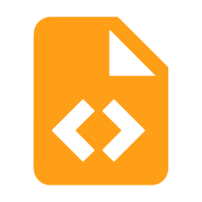
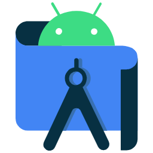

Communicare
Este é o Communicare, um aplicativo mobile desenvolvido para ajudar pessoas que não sabem a Língua Brasileira de Sinais (LIBRAS) a se comunicarem com pessoas surdas com mais facilidade. O projeto foi desenvolvido por mim e minha equipe, e apresentado como Trabalho de Conclusão de Curso no SENAI, em Feira de Santana, BA.
Sua proposta surgiu a partir de uma situação real vivenciada por colegas no passado, que, por não terem acesso ao ensino de LIBRAS na escola onde estudavam, enfrentavam dificuldades para interagir com uma colega surda.
Ao explorarmos mais sobre tecnologias assistivas, percebemos que havia poucas soluções voltadas para esse público. Então, desenvolvemos um aplicativo que permite a comunicação por meio de teclados adaptados, com layouts em LIBRAS e saída em áudio, além de uma aba de aprendizagem com atividades e minigames para aprender LIBRAS, e uma aba de emergência que permite as pessoas surdas realizarem chamadas com transmissão por voz em casos urgentes.


Alguns podem achar que a comunicação por teclados não seria tão prática, ou até assumir que toda pessoa surda sabe a língua portuguesa. Mas, e se ela não souber? Como vai associar cada sinal a uma letra? 🤔
Sim, por melhor que seja a causa, o projeto precisa ser funcional e realmente atender às necessidades dos usuários. Por isso, ao escolher a digitação como base para a comunicação no aplicativo, utilizamos recursos acessíveis para tornar o diálogo mais intuitivo e dinâmico. O aplicativo foi desenvolvido para celulares Android usando Java no Android Studio, e conta com teclados adaptados com ícones visuais representando sinais de LIBRAS. Isso permite que o usuário se comunique mesmo sem dominar completamente a língua portuguesa, apenas selecionando símbolos visuais associados aos sinais.
Durante o desenvolvimento, diversos desafios surgiram para garantir que o aplicativo fosse, de fato, funcional e acessível como planejado. Entre eles, destacam-se a criação das funções do teclado, a associação precisa entre sinais e letras, a adaptação para diferentes tamanhos de tela, a implementação da API de ligação na aba de emergência e o salvamento do progresso nos minigames.
A partir dos testes realizados e dos feedbacks recebidos, já pensamos em futuras melhorias — como a inclusão de um modelo 3D para realizar os sinais — com o objetivo de tornar a experiência ainda mais intuitiva para pessoas surdas. Acreditamos que, ao continuar ouvindo as necessidades reais dos usuários, poderemos transformar o Communicare em uma ferramenta cada vez mais completa, humana e transformadora.
Tecnologias utilizadas
- XML
 JAVA
JAVA- ANDROID STUDIO
- FIREBASE
- MYSQLite
Funcionalidades do projeto
- Cadastro;
- Login e Logout;
- Teclado 1 - Layout em Libras saída em português ;
- Teclado 2 - Layout em Português saída em LIBRAS;
- Converter texto para áudio;
- Adicionar mensagens pré-definidas;
- Atividades;
- Minegames;
- Conteúdo em vídeo;
- Aba de emergência;
Dificuldades enfrentadas
- Desenvolver atividades e minegames eficientes respeitando a Linguagem Brasileira de Sinais;
- Integrar uma API de conversão de texto no teclado;
- Criação de layout responsivo;
Aprendizados
- Integração do Front-End com Back-End;
- Autenticação via Firebase;
- Implementação de conversão de texto em fala;
- Colaborar com a equipe no vercionamento do aplicativo;
- Gestão de tarefas;
Melhorias futuras
- Desenvolver um modelo 3D;
- Criar novos mine games;
- Criação de testes automatizados para correção de bugs e falhas;